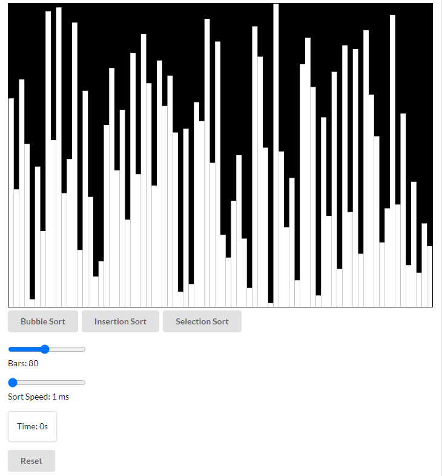

This was an early attempt to write a program that could visualize comparison-based sorting algorithms. It supports three of the $\displaystyle{O(n^2)}$ sorting algorithms: bubble sort, insertion sort, and selection sort. It technically implements bogosort as well, which runs in $\displaystyle{O((n + 1)!)}$. To achieve this, click the reset button until the entire array is sorted. If you did not get the joke, click here to read about the amazing bogosort.
This was one of the first JavaScript projects I worked on when I was learning it for the first time. Everything was naively placed in a single index.html file, and I have chose to keep it that way as a reminder of those days.
I was inspired by many of the sorting algorithm videos found on YouTube, such as this one (seizure warning). Unfortunately (or fortunately, depending on your perspective), my project does not make any noise.
The implementation uses the HTML canvas API to draw rectangles on the screen based upon randomly shuffled values of an array. The sort functions then call an update function which re-draws the canvas every time an element is swapped. By making the functions async, I was able to change the rate at which the swaps occurred. The user can see this by changing the "Sort Speed" slider.